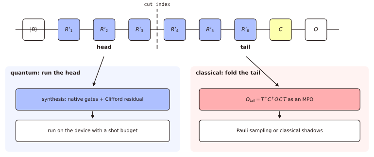
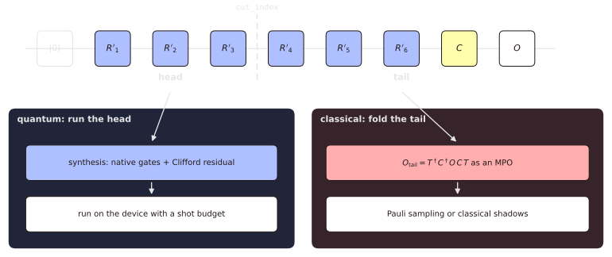

Hybrid quantum-classical execution: HQSMPO¶
An HSMPO evaluates a circuit entirely on a classical computer.
Its cost grows with the magic and the entanglement of the chain of dressed
rotations, so some circuits are out of reach. A quantum computer runs any
circuit natively, but it is noisy and returns averages over a finite number of
shots, so the shorter the circuit, the better the answer.
HQSMPO splits the work between the two: the
device runs the beginning of the circuit, and mpstab takes care of the rest
classically. This page explains the idea; the pages below explain how the part
that runs on the device becomes a circuit.
The head/tail split¶
In the HSMPO frame a circuit is a chain of dressed Pauli rotations \(R'_1, \dots, R'_R\) followed by a single Clifford \(C\), and an expectation value reads
Cut the chain at cut_index \(k\). The first \(k\) rotations form the
head, \(H = R'_k \cdots R'_1\), and the rest the tail,
\(T = R'_R \cdots R'_{k+1}\). Grouping the tail with the observable,
The head is a state the device prepares; the tail is a new observable, computed classically in the Heisenberg picture: mpstab conjugates \(O\) by the tableau and then by each tail rotation, keeping the result as an MPO.




cut_index moves work between the two sides. At cut_index =
len(magic_gates) the whole chain runs on the device and the classical side
only handles the Clifford \(C\); at cut_index = 0 nothing runs on the
device and the computation is an ordinary HSMPO. In between, a shorter head
means a shorter, less noisy circuit, and a longer tail means a larger MPO,
whose truncation and measurement cost grow with it
(Fidelity and Approximation and HQSMPO.tail_truncation).
Three stages¶
expectation_at_cut() chains three stages,
which can also be run separately.
Synthesis. The head is a list of dressed rotations about multi-qubit Pauli strings, which a device cannot run as such. A synthesiser (
head_synthesis) turns it into native gates. All of them leave a Clifford residual at the end, which is never run: like \(C\), it is folded into the observable by the tableau. Three synthesisers are available:"extraction"(ExtractionSynthesis): Clifford extraction, dependency-free and aware of the device connectivity; see Head Synthesis by Clifford Extraction;"rustiq"(RustiqSynthesis, the default): rustiq’s Pauli-network synthesis, an optional dependency; see Hardware Resynthesis with rustiq;"cnot_ladder"(CnotLadderSynthesis): the textbook decomposition, with no residual.
Measurement. The device cannot measure an MPO directly. Two methods turn \(O_{\rm tail}\) into circuits and shots:
"pauli"(PauliSampling) samples Pauli strings from the MPO and groups them into qubit-wise commuting measurement settings;"shadows"(ClassicalShadows) measures random single-qubit bases and contracts each snapshot with the MPO.
Both return an
ExpectationResultwith an error bar,total_error.Execution.
plan()builds the circuits and saves them as OpenQASM; a device, or a simulator throughrun_plan(), runs them;estimaterecombines the counts into the expectation value.
With light_cone=True, the rotations outside the light cone of the
observable are dropped first: a rotation that commutes with the observable and
with every later rotation that matters cancels exactly, so it need not be run
in the head nor folded in the tail.
Usage¶
from mpstab import HQSMPO
from mpstab.models.ansatze import ParametricKickedIsing
hs = HQSMPO(
ansatz=ParametricKickedIsing(nqubits=6, n_steps=3, delta_h=0.2),
head_synthesis="extraction",
)
cut_index = len(hs.magic_gates) // 2
# One call: synthesize, plan, run on a simulator, estimate.
result = hs.expectation_at_cut("ZZIIII", cut_index, method="pauli",
n_shots=20000, seed=0)
print(result.value, result.total_error)
# The same split contracted classically: a reference, not a measurement.
exact = hs.expectation_at_cut("ZZIIII", cut_index, method="simulation").value
On a device, run the stages yourself:
from mpstab.qpu.measurement import estimate
plan = hs.plan("ZZIIII", cut_index, method="pauli", n_shots=20000, seed=0)
counts = ... # run plan.circuits on the device, with their shot counts
result = estimate(plan, counts)
Noise on the device biases the head. The circuits that correct it can be added
to the same plan: see VnCDRMitigation
and the Data-driven error mitigation tutorial.